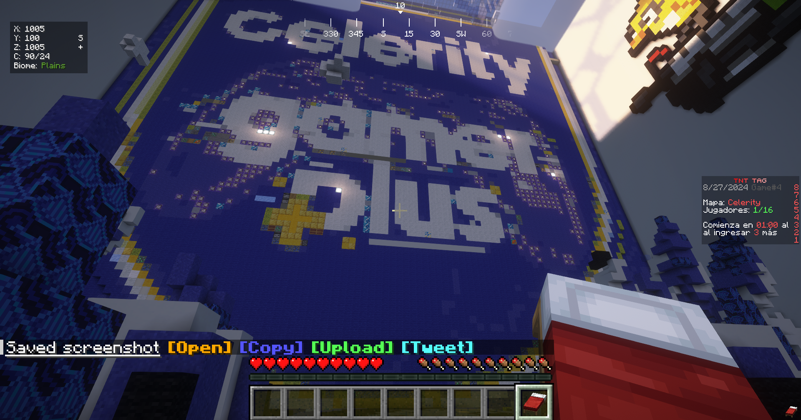
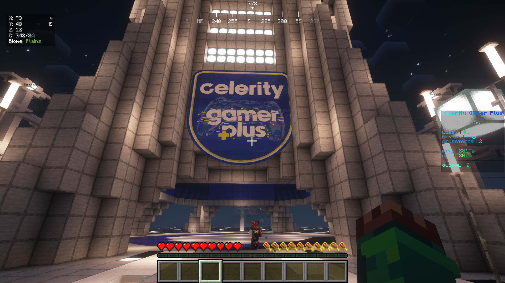
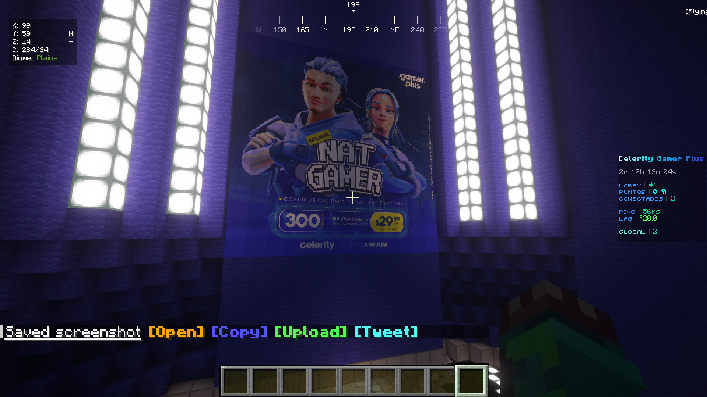
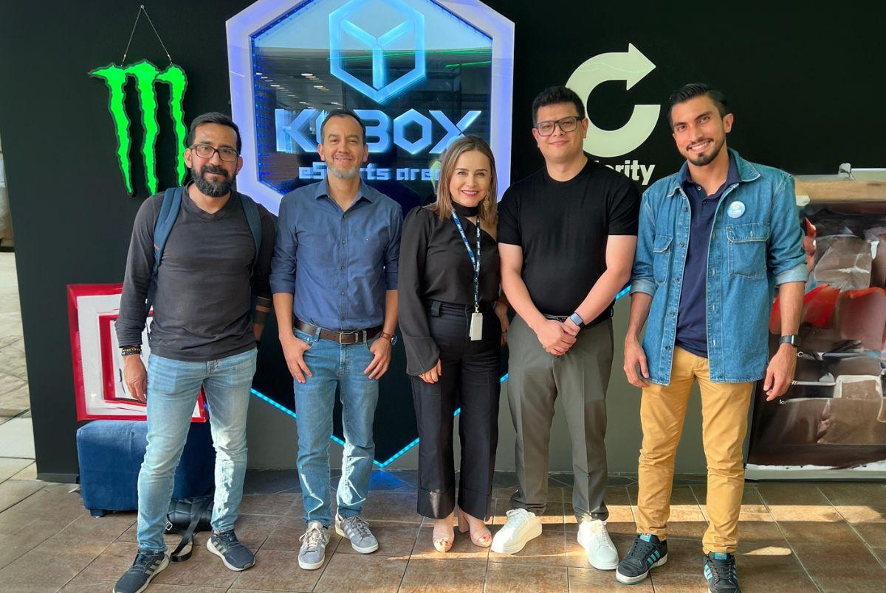

How we gamified an ISP product launch inside Minecraft — and packed a physical esports arena to capacity.
Gamers don't just ignore traditional advertising — they actively despise it. When Celerity prepared to launch their new Celerity Gamer Plus internet plan, the product team knew standard corporate ads would fall flat with a community that is fiercely defensive of its spaces.
The mandate was clear but difficult: Introduce a technical utility product to a highly skeptical, ad-blind demographic, build genuine brand affinity, and drive direct traffic to the product landing page.
Operating within an Agile Framework as the team's UI Designer, I recognized that a beautiful interface wouldn't save the launch if the ecosystem lacked cultural authenticity. I stepped beyond the traditional boundaries of a UI role to act as our cross-functional Gaming Culture Specialist, ensuring the entire user journey felt native to the community.
Instead of buying standard ad space, we built Celerity Craft — a custom, branded Minecraft server designed as a playable marketing funnel. My role focused on bridging the digital and physical experience:



